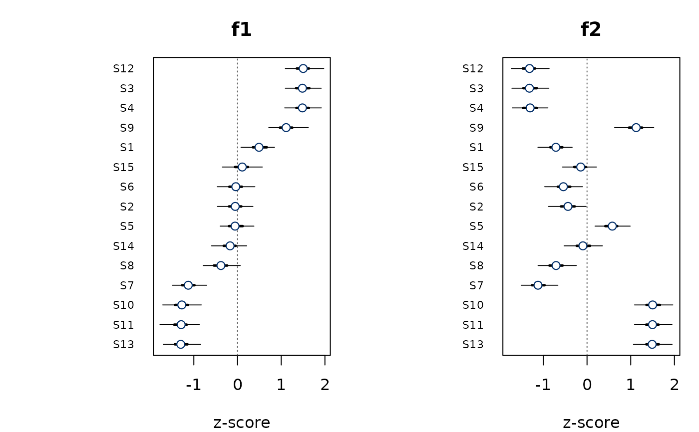

Returns a bayesqm_fit with realistic Q-methodology structure:
every participant has a dominant factor, roughly 40 percent of the
statements polarise the factor pair, 10 percent are consensus, and
the remainder are weakly partial. Use it for documentation,
teaching materials, and the package vignette; it is not a
substitute for fit_bayesian() on real data.
Examples
fit <- demo_fit(N = 12, J = 15, K = 2)
plot(fit)

summary(fit)
#> Bayesian Q-methodology factor model
#> Call: fit_bayesian(Y, K = K)
#> Family: Student-t (nu = estimated)
#> Factors: K = 2
#> Data: N = 12 persons, J = 15 statements
#> Draws: 4 chains x 1000 post-warmup = 4000 total
#> Backend: demo
#> Fitted: 2026-05-06 07:04:28
#> Max Rhat: 1.010
#> Min ESS: bulk 820 / tail 950
#> Divergent: 0
#>
#> Factor characteristics:
#> nload eigenvals expl_var
#> f1 6 3.204 26.70
#> f2 6 3.122 26.01
#>
#> Hyperparameters (posterior summary):
#> parameter mean median sd lower upper
#> nu 20.233 20.246 4.2205 12.144 28.767
#> sigma 0.498 0.500 0.0786 0.345 0.646
#> tau 0.507 0.511 0.0820 0.358 0.660
#>
#> Distinguishing / consensus statements (delta = 1.0, p > 0.95):
#> Consensus 6
#> Distinguishes all 6
#>
#> MatchAlign diagnostics (mean Tucker phi per factor):
#> f1 = 0.943 f2 = 0.945